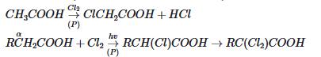

The Hell-Volhard-Zelinsky halogenation reaction is a chemical transformation that transforms an alkyl carboxylic acid to the α-bromo or α-chloro derivative. It is a specialized and rare kind of halogenation.
R-CH2-COOH + Br2/P → R-CHBr-COOH
CH3COOH + Br2/P → CH2BrCOOH

The phosphorus tribromide (PBr3) reacts with the carboxylic acid to form an acyl bromide. This intermediate is essential because acyl bromides enolize much faster than carboxylic acids.
R-CH2COOH + PBr3 → R-CH2COBr + H3PO3
The acyl bromide tautomerizes to its enol form. The α-hydrogen is acidic and removed, forming a double bond between the α-carbon and the carbonyl carbon.
R-CH2COBr ⇌ R-CH = C(OH)Br (Enol form)
The enol reacts with bromine (Br2) to introduce a bromine atom at the α-position. This is an electrophilic addition followed by elimination.
R-CH = C(OH)Br + Br2 → R-CHBr-COBr + HBr
The α-bromoacyl bromide reacts with an unreacted molecule of carboxylic acid via an anhydride intermediate. This restores the acyl bromide species (allowing the cycle to continue) and produces the final α-bromo carboxylic acid upon workup.
R-CHBr-COBr + R-CH2COOH → R-CHBr-COOH + R-CH2COBr